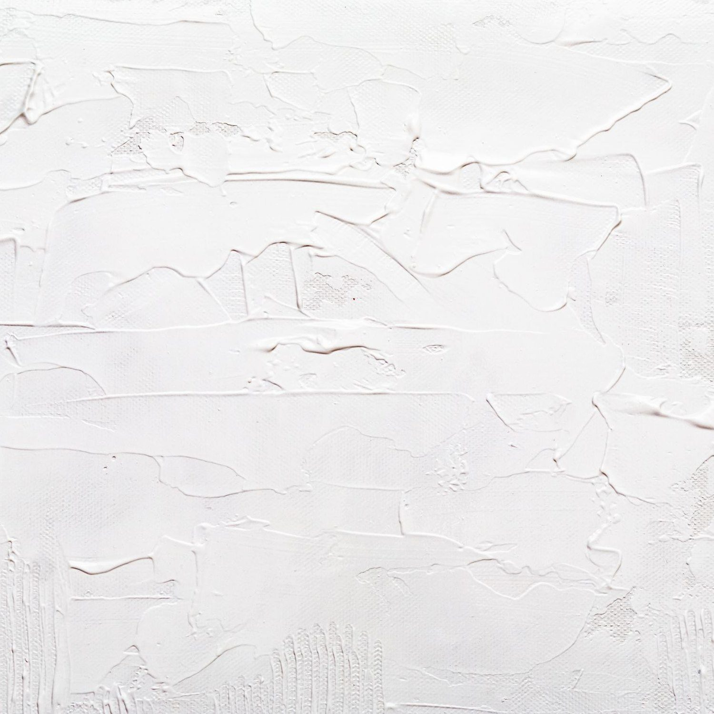
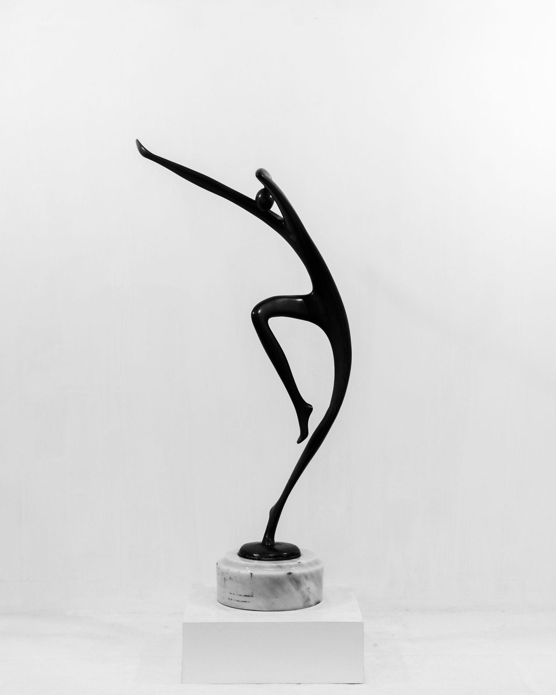

Ines Vaerman
Gent, 1988
Werkt met gips, kalk en structuurpasta. Haar witte reliëfs veranderen met het licht van de dag: 's ochtends zacht, 's avonds diep en grafisch.
Bekijk de werkenProbeer bijvoorbeeld brons, wit, Vaerman of keramiek.
Een kleine kring makers die we persoonlijk kennen. Elk werk komt rechtstreeks uit hun atelier.

Gent, 1988
Werkt met gips, kalk en structuurpasta. Haar witte reliëfs veranderen met het licht van de dag: 's ochtends zacht, 's avonds diep en grafisch.
Bekijk de werken
Rotterdam, 1979
Schildert in zwart en wit, met grote, snelle gebaren. Elk doek is één beweging, vastgelegd in acryl en houtskool.
Bekijk de werken
Utrecht, 1991
Kleur als onderwerp. Werkt met dikke lagen olieverf en paletmes, en maakt daarnaast kleine oplages giclée-prints.
Bekijk de werken
Antwerpen
Klein atelier voor brons en steen. Gietwerk in oplages van maximaal acht, elk exemplaar genummerd en gesigneerd.
Bekijk de werkenVoorbeeldkunstenaars ter illustratie. Bij lancering stellen we de echte kunstenaars voor, met hun eigen tekst en portret.